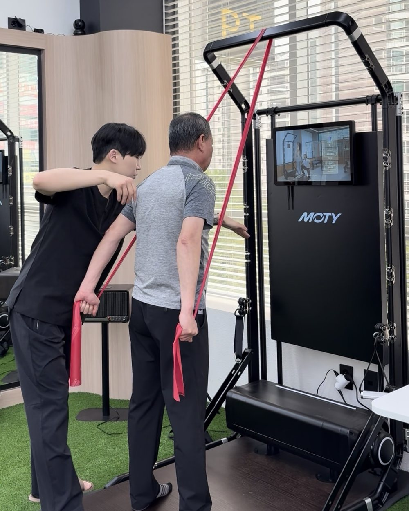

PROGRAM 02 · RECOVERY
수술 후 재활운동병원 치료 이후,
일상과 운동으로 돌아가는 길
수술과 병원 치료를 마친 뒤에도 예전처럼 움직이기까지는 시간이 필요합니다. 데이지는 병원 치료를 마친 분을 대상으로, 담당 의료진의 소견을 바탕으로 운동의 범위와 강도를 조절하며, 일상과 운동으로 돌아가는 과정을 단계적으로 함께합니다.

RECOMMENDED FOR
이런 분께 추천해요
- 회전근개, 십자인대, 반월상연골, 발목 인대 등 수술 후 병원 재활을 마친 분
- 병원 재활을 마쳤지만 움직임이 예전 같지 않다고 느끼는 분
- 다시 운동이나 스포츠로 돌아가고 싶은 분
- 혼자 운동하기에는 다시 다칠까 불안한 분
PROCESS
평가에서 시작해, 이렇게 진행됩니다
- STEP 01
소견 · 수술 정보 확인
수술 부위와 시기, 담당 의료진의 운동 관련 소견을 먼저 확인합니다. 소견에 없는 범위의 운동은 진행하지 않습니다.
- STEP 02
관절 · 근력 평가
관절 가동범위와 주변 근력, 움직임을 측정합니다.
- STEP 03
단계별 운동
가동성 → 안정성 → 근력 → 기능 순서로 단계를 밟아 갑니다.
- STEP 04
정기 재평가
관절 각도와 근력을 다시 측정해 다음 단계로 넘어갈 시점을 정합니다.
- STEP 05
복귀 준비
일상 동작과 원래 하던 운동·스포츠 동작으로 연결합니다.
APPROACH
주요 운동 접근법
- 01
관절 가동범위 운동
담당 의료진이 허용한 범위 안에서 관절을 움직이는 운동을 합니다.
- 02
주변 근육 안정화
수술 부위 주변 근육을 쓰는 운동으로 관절을 안정적으로 움직이는 연습을 합니다.
- 03
단계적 근력 강화
부담을 조금씩 늘리며 양쪽 근력 차이를 줄여 갑니다.
- 04
기능 · 동작 연습
계단, 물건 들기, 스포츠 동작처럼 실제 움직임을 연습합니다.

수술 후 재활운동은 의료기관의 치료를 대신하지 않습니다. 운동 중 통증이나 부기 등 평소와 다른 증상이 있으면 담당 의료진과 먼저 상의해 주세요.
다른 프로그램 보기


운동 결과는 개인의 상태와 참여 정도에 따라 다를 수 있으며, 특정 질환의 치료나 결과를 보장하지 않습니다.